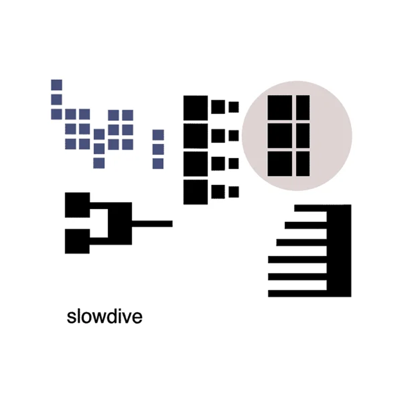

Pygmalion
Slowdive
1995 • 9 songs • 48:23
Genres: Ambient Pop, Dream Pop, Post-Rock
Pygmalion created scintillating atmospheric soundscapes that were as disturbing and sombre as they were hypnotic and catchy.
This album is mysterious, surreal, lush and calm.
I want to melt into a good sleep...